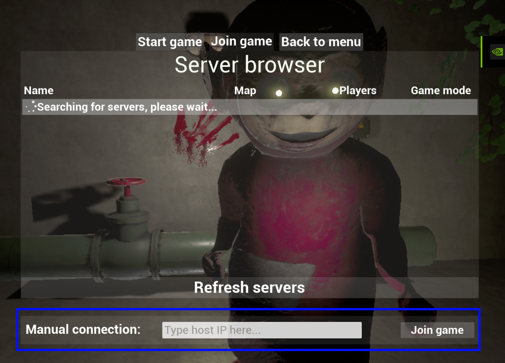

How to play Slendertubbies online?
This document will help you to host and join multiplayer game. I'll also show you how to manage connected players.
Let's talk how to host and join LAN match
Before we can start make sure that:
- You are in the same network as you friend.
- You have enabled game in Windows FireWall.
- You have disabled host isolation in your router/switch settings (in most cases this is default of).
- You are using the same game version.
Here is video tutorial:
Troubleshooting LAN connection.
You can content to existing server by typing server IP. Slendertubbies launcher can easily show you IP.
To get server IP you have to open Slendertubbies launcher on server computer!
Getting an IP address
In order to get host IP open Slendertubbies launcher on server computer!
Press in-launcher "IP" button. You will see this dialogue box.

You can see that on line 4 we can see our LAN IP address.
Write somewhere this address and jump to client (friend's) PC.
On client PC write in "manual connection" gathered before IP address.
Then press "Join game".
Done ^^
- Make sure that You are in the same network as you friend.
- Make sure thatYou have enabled game in Windows FireWall.
- Make sure thatYou have disabled host isolation in your router/switch settings (in most cases this is default of).
- Make sure thatYou are using the same game version.
Let's talk about how to host and join Steam match
Before we can start make sure that:
- You are in the same steam download region as you friend.(check it out if your friend does not live in the same country as you.)
- You have enabled game in Windows FireWall.
- You have steam running in background.
- You are using the same game version.
Here is video tutorial how to host steam match:
Joining Steam game.
Here is video tutorial how to join steam match:
Troubleshooting Steam connection.
- Make sure that You have enabled game in Windows FireWall.
- Make sure that You have disabled host isolation in your router/switch settings (in most cases this is default of).
- Make sure that You are using the same game version.
- Check in-game is Shift+Tab working. If it's not working that means you haven't running steam in background.
- Make sure you are in the same Steam download area
If you still can't play with your friend fell free to contact me on Misiu Games Studio discord server.
Keep in mind that I'm not 24/7 active. Thank you :)